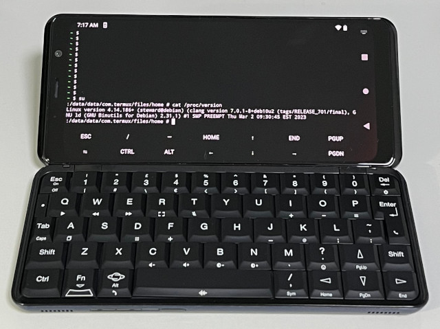

Steward
分享是一種喜悅、更是一種幸福
手機 - Astro Slide 5G - Android - Build Kernel 4.14.186
參考資訊：
https://www.oesf.org/forum/index.php?topic=36812.30
https://github.com/PCLineageOS-Ports/android_build_planet_kernel/blob/main/common/scripts
Debian 10 x64
$ cd
$ git clone --depth 1 --branch 2022.11.09 https://github.com/osm0sis/mkbootimg.git
$ cd mkbootimg
$ make -j4
$ cd
$ rm -rf /tmp/bootimg
$ mkdir /tmp/bootimg
$ ./mkbootimg/unpackbootimg -i boot.img -o /tmp/bootimg
$ cd
$ wget https://github.com/steward-fu/website/releases/download/astro/astro_defconfig
$ git clone --depth=1 https://github.com/PCLineageOS-Ports/android_kernel_planet_mt6873 kernel
$ cp astro_defconfig kernel/arch/arm64/configs/
$ vim kernel/Makefile +420
KBUILD_CFLAGS := -w -Wall -Wundef -Wstrict-prototypes -Wno-trigraphs \
$ mkdir KERNEL_OUT
$ make O=../KERNEL_OUT -C kernel ARCH=arm64 astro_defconfig
$ cd kernel
$ make -j4 O=../KERNEL_OUT ARCH=arm64 CC=clang CLANG_TRIPLE=aarch64-linux-gnu- CROSS_COMPILE=aarch64-linux-gnu- all
$ cp ../KERNEL_OUT/arch/arm64/boot/Image.gz /tmp/bootimg/boot.img-kernel
$ cd
$ rm -rf myboot.img
$ ./mkbootimg/mkbootimg \
--base "$(cat /tmp/bootimg/boot.img-base)" \
--board "$(cat /tmp/bootimg/boot.img-board)" \
--cmdline "$(cat /tmp/bootimg/boot.img-cmdline)" \
--dtb /tmp/bootimg/boot.img-dtb \
--dtb_offset "$(cat /tmp/bootimg/boot.img-dtb_offset)" \
--hashtype "$(cat /tmp/bootimg/boot.img-hashtype)" \
--header_version "$(cat /tmp/bootimg/boot.img-header_version)" \
--kernel /tmp/bootimg/boot.img-kernel \
--kernel_offset "$(cat /tmp/bootimg/boot.img-kernel_offset)" \
--os_patch_level "$(cat /tmp/bootimg/boot.img-os_patch_level)" \
--os_version "$(cat /tmp/bootimg/boot.img-os_version)" \
--pagesize "$(cat /tmp/bootimg/boot.img-pagesize)" \
--ramdisk /tmp/bootimg/boot.img-ramdisk \
--ramdisk_offset "$(cat /tmp/bootimg/boot.img-ramdisk_offset)" \
--second_offset "$(cat /tmp/bootimg/boot.img-second_offset)" \
--tags_offset "$(cat /tmp/bootimg/boot.img-tags_offset)" \
--output myboot.img
$ git clone https://github.com/bkerler/mtkclient
$ cd mtkclient
$ ./mtk w boot_a ../myboot.img
